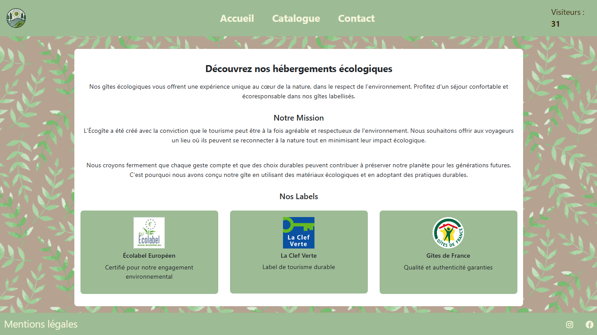

Mes Projets Personnels Encadrés (PPE)
PPE 1-1 : Création Éco-gîte
2024

Description
Création d'un site web d'écogite dans un cadre d'école. Le site présente les hébergements, l'entreprise et permet aux visiteurs de prendre contact.
Technologies utilisées
- HTML5 et CSS3
- Responsive design
- Intégration de cartes interactives
Tâches réalisées
- Page d'accueil
- Page mentions légales
- HTML/CSS global (Navbar, Footer)
- Intégration de cartes via Google Maps
PPE 1-2 : MEDOCLABS
2024Description
Mise en place d'une infrastructure réseau complète avec Windows Server 2019 (AD DS), serveur web sous Debian, serveur DNS et station cliente Windows.
Technologies utilisées
- Windows Server 2019 (Active Directory)
- Debian (Apache, Bind9)
- Gestion des utilisateurs et GPO
- Partages de fichiers
Tâches réalisées
- Mise en place du serveur web sous Debian
- Configuration du service DNS
- Création de l'arborescence Active Directory
PPE 2 : LOGONET
2025Description
Conception et configuration d'une infrastructure réseau complète dans un cadre scolaire comprenant un serveur Windows avec Active Directory, des serveurs DHCP, DNS, de sauvegarde et un système RAID 5.
Technologies utilisées
- Windows Server 2019 (AD, GPO)
- Debian (Apache, Bind9, RAID 5)
- Sauvegarde automatisée
- Poste client avec LibreOffice et antivirus
Tâches réalisées
- Installation et configuration d'Active Directory
- Création des UO, groupes et utilisateurs
- Mise en place des GPO pour les répertoires
- Configuration du RAID 5
- Configuration d'une sauvegarde automatisée
- Création de plans de test